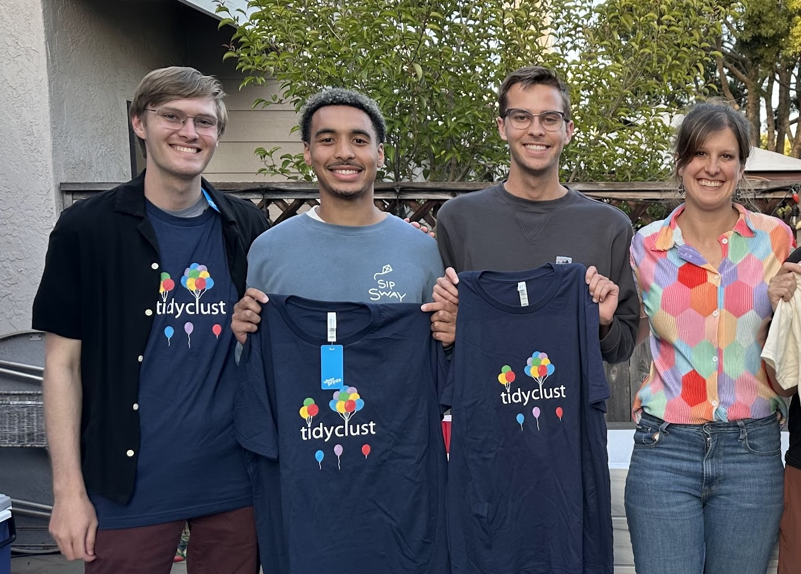

Adding models to tidyclust
Kelly Bodwin, California Polytechnic State University
What is tidyclust?
tidymodels: A unified framework for predictive models
Specify:
https://www.tidymodels.org/ - Max Kuhn, Hannah Frick, Emil Hvitfeldt, Simon Couch
tidyclust: A unified framework for unsupervised models
Specify:
https://tidyclust.tidymodels.org/ - Emil Hvitfeldt, me
Why we like this
The same data preprocessing (a.k.a.
recipe) can be used with many model specifications.Shortcuts for cross-validation and tuning.
(whatever that means in an unsupervised setting…)
More consistency of user input.
Example: Many k-means functions!
In Base R (stats):
Adding a model to tidyclust
Adding a model means creating a new specification function
This unifies many engines that use the same(ish) algorithm.
Just a simple little wrapper function in
tidycluststyle?

Expanding tidyclust
Cal Poly MS Student projects
{width = 2in} Andrew Kerr, Jacob Perez, Brendan Callendar, me
Jacob Perez: BIRCH
BIRCH is an algorithm that aggolmeratively pre-clusters large data into clustering factors, then applies a traditional clustering method.
Brendan Callendar: DBSCAN and Gaussian Mixtures
DBSCAN is a density-based clustering that combines points withing a particular radius.
Andrew Kerr: Frequent Itemset Mining
Frequent Itemset Mining and Association Rules are unsupervised approaches to clustering columns
Code and Housekeeping
Copy-paste from existing specifications to create new
tidyclustclass for new model.Write helper functions for managing engine fits and predicts
Create tuning infrastructure in
tidyclustanddials
Big Decisions
What will be the exposed hyperparameters and their defaults?
What algorithm variants will be used under the hood?
What does prediction look like?
Hyperparameters
Which should be exposed?
Most engines have many, many parameters:
Which should be exposed?
Some control initial conditions…
Which should be exposed?
some control details of the mathematical fitting algorithm…
Which should be exposed?
… some control console output …
Which should be exposed?
… some control prediction …
Which should be exposed?
… and only a few are true hyperparameters.
Rules of Thumb
Expose arguments that…
Definitely require user decision-making every time (
num_cluster)Might be tuned. (
radius)Change the inherent philosophy of the algorithm (
linkage_method)
What’s left?
Do NOT expose:
Seeds. (Use seed setting on your whole process, not by model.)
Mathematical optimization settings.
Console output
Maybe expose:
Initializations (if they might be tuned)
Prediction approaches (if they change tracking during fit)
Unexposed parameters
Remember, engine arguments can always still be changed using set_engine()!
Naming and Parametrization
Now, how are we going to combine existing arguments into a single coherent set?
Example: Gaussian Mixed Model constraints
modelNames
A vector of character strings indicating the models to be fitted in the EM phase of clustering. The default is:
for univariate data (d = 1): c("E", "V")
for multivariate data (n > d): all the models available in mclust.options("emModelNames")
for multivariate data (n <= d): the spherical and diagonal models, i.e. c("EII", "VII", "EEI", "EVI", "VEI", "VVI")
Naming and Parametrization
Do we keep the existing format of the
modelNamesargument, or reparametrize?Decision: Reparametrize!
The various combinations (“EII”, “VEI”, etc.) correspond to:
- Do the mixture models have any covariance across dimensions?
- Do all mixtures have the same covariance?
- … etc.
Gaussian Mixture Model Options
Gaussian Mixture Model Options
Naming and Parametrization
Things to think about…
Self-documenting arguments.
Generalizability across implementations (engines)
Decision support for users - “upgrades” from defaults are clear.
Easy tuning - booleans may be better than strings?
Defaults and Tuning
Other housekeeping…
What will be the default values for all the exposed parameters? Why?
Do we want to override any defaults of unexposed parameters? Why? (This appears in the
fit()helpers.)What will be the default tuning grid? Log scale? What range? etc. (in the
dials()package)Does the tuning grid depend on the dataset or can we establish a global default?
Fit/Predict Algorithms
fit helpers and overrides
Quick quiz: How does the stats::kmeans() function initialize centroids? How about ClusterR::KMeans_rcpp()?
WRONG!
(probably, I dunno, maybe the author is in the audience)
Should we let the engine decide or force a unified default?
predict helpers and overrides
Easy mode: k-means
How to predict the cluster assignment of a new observation?
The k-means algorithm clusters by nearest centroid…
… so just assign the point to a cluster based on nearest centroid!
predict helpers and overrides
Hard mode: Hierarchical Clustering
- ???????
.hier_clust_predict_stats <- function(
object,
new_data,
...,
prefix = "Cluster_"
) {
linkage_method <- object$method
new_data <- as.matrix(new_data)
training_data <- as.matrix(attr(object, "training_data"))
clusters <- extract_cluster_assignment(
object,
...,
prefix = prefix,
call = call("predict")
)
if (linkage_method %in% c("single", "complete", "average", "median")) {
## complete, single, average, and median linkage_methods are basically the
## same idea, just different summary distance to cluster
cluster_dist_fun <- switch(
linkage_method,
"single" = min,
"complete" = max,
"average" = mean,
"median" = stats::median
)
# need this to be obs on rows, dist to new data on cols
dists_new <- philentropy::dist_many_many(
training_data,
new_data,
method = "euclidean"
)
cluster_dists <- dplyr::bind_cols(data.frame(dists_new), clusters) |>
dplyr::group_by(.cluster) |>
dplyr::summarize_all(cluster_dist_fun)
pred_clusts_num <- cluster_dists |>
dplyr::select(-.cluster) |>
map_dbl(which.min)
} else if (linkage_method == "centroid") {
## Centroid linkage_method, dist to center
cluster_centers <- extract_centroids(object) |> dplyr::select(-.cluster)
dists_means <- philentropy::dist_many_many(
new_data,
cluster_centers,
method = "euclidean"
)
pred_clusts_num <- apply(dists_means, 1, which.min)
} else if (linkage_method %in% c("ward.D", "ward", "ward.D2")) {
## Ward linkage_method: lowest change in ESS
## dendrograms created from already-squared distances
## use Ward.D2 on these plain distances for Ward.D
cluster_centers <- extract_centroids(object)
n_clust <- nrow(cluster_centers)
cluster_names <- cluster_centers[[1]]
cluster_centers <- as.matrix(cluster_centers[, -1])
d_means <- map(
seq_len(n_clust),
\(.x)
t(
t(training_data[clusters$.cluster == cluster_names[.x], ]) -
cluster_centers[.x, ]
)
)
d_new_list <- map(
seq_len(nrow(new_data)),
function(new_obs) {
map(
seq_len(n_clust),
\(.x)
t(
t(training_data[clusters$.cluster == cluster_names[.x], ]) -
new_data[new_obs, ]
)
)
}
)
n <- nrow(training_data)
change_in_ess <- map(
d_new_list,
function(v) {
map2_dbl(
d_means,
v,
\(.x, .y) sum((n * .x + .y)^2 / (n + 1)^2 - .x^2)
)
}
)
pred_clusts_num <- map_dbl(change_in_ess, which.min)
} else {
cli::cli_abort(
"linkage_method {.val {linkage_method}} is not supported for prediction."
)
}
pred_clusts <- unique(clusters$.cluster)[pred_clusts_num]
pred_clusts
}predict helpers and overrides
Medium mode: DBSCAN
In the DBSCAN engine:
- Fitting:
- Find all core points (at least
min_nother points withinradiusaway) - Find all boundary points (within
radiusof a core point) - Everything else is an outlier
- “Blobs” are clusters.
- Find all core points (at least
- Predicting:
- If a new point is within
radiusof a non-outlier, put it in that cluster
- If a new point is within
DBSCAN
predict helpers and overrides
Medium mode: DBSCAN
In the tidyclust::db_clust() implementation:
- Fitting:
- Find all core points (at least
min_nother points withinradiusaway) - Find all boundary points (within
radiusof a core point) - Everything else is an outlier
- “Blobs” are clusters.
- Find all core points (at least
- Predicting:
- If a new point is within
radiusof a CORE POINT, put it in that cluster
- If a new point is within
predict helpers and overrides
.db_clust_predict_dbscan <- function(object, new_data, prefix = "Cluster_") {
is_core <- attr(object, "is_core")
training_data <- attr(object, "training_data")
cp <- training_data[is_core,]
cp_clusters <- object$cluster[is_core]
eps <- attr(object, "radius")
if (sum(is_core) == 0) {
clusters <- (rep(0, nrow(new_data)))
n_clusters <- 1
} else {
nn <- dbscan::frNN(cp,
query = new_data,
eps = eps,
sort = TRUE)
clusters <- vapply(
nn$id, function(nns) if (length(nns) == 0L) 0L else cp_clusters[nns[1L]], integer(1L)
)
n_clusters <- length(unique(object$cluster[object$cluster != 0])) + 1
}
make_predictions_w_outliers(clusters, prefix, n_clusters)
}The Golden Rule: predict() and fit() should always agree!!!
Unsupervised Learning Beyond Clustering
Beyond Clustering
- Not all clustering methods are a partition (one cluster for each point)
- Outliers (DBSCAN!)
- Overlap of cluster
- Cluster extraction
- Not all clustering methods act on rows/observations
- Itemset mining: Get groups of columns
- Association rule mining: Get rules for columns
- Biclustering: Get groups of row/column sets
So, what now?
Want more tidyclust? Make it!
If you have a favorite algorithm that isn’t implemented, you can build it!
(or start to, and we can help!)
The hard part is not (usually) the coding: it’s thinking deeply about the decisions your design scaffolds.
(Also: unsupervised tuning?????)
Lots of documentation: https://tidyclust.tidymodels.org/
Chatting about this is my absolute favorite. Find me.
Thank you!